Durante el proceso de autenticación de Kerberos se utilizan ciertos nombres que están asociados con AD.S
A la hora de arrancar nuestra máquina WS01,WS02,... cualquiera dentro del dominio, en el prompt del login inicial es donde comienza todo este proceso y donde el usuario consigue su TicketGrantingTicket(TGT).
Abrimos Wireshark y lo ponemos a capturar en la red privada del domino.
Iniciamos sesión en el WS01
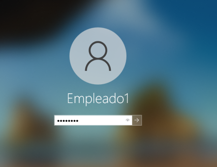
En wireshark filtramos por Kerberos y vemos:
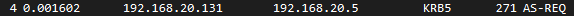
Este primer paquete envía el usuario para pedir el servicio de autenticación (Autentication service request)
Si desplegamos los datos del paquete vemos que envía el nombre del usuario y los servicios que está solicitando
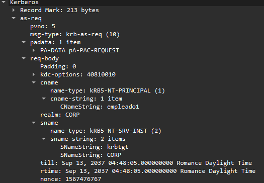
Todos los servicios de ActiveDirectory vienen identificados por el Service Principal Name (SPN).
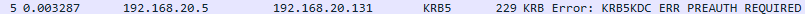
Si nos fijamos el siguiente paquete es un error por parte del servicio de autenticación que indica la necesidad de una pre-autenticación y esto es porque en la nueva implementación de Kerberos v5 se añadió la comprobación de usuario necesitando un TimeStamp cifrado con el password del usuario.
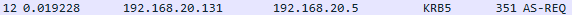
El usuario manda otra petición pero esta vez con un timestamp cifrado.
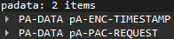
El servicio responde con un paquete Autentication service replay (AS-REP):
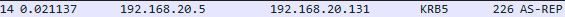
En su contenido vemos que adjunta el ticket que veíamos previamente y otro dato encriptado que se trata de sessionkey cifrada con el password del usuario
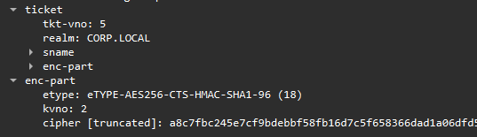
Esta información se descifra en el usuario y el usuario envía un paquete TGS-REQ (ticket granting service request):
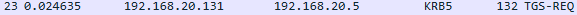
Como veíamos antes esto contiene el TGT que recibió antes y un autenticator
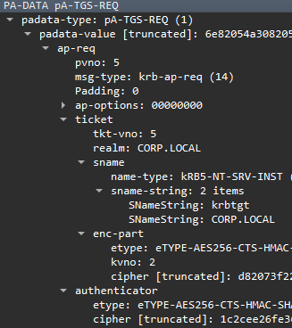
Del servicio recibimos un TGS-REP (ticket granting service replay)
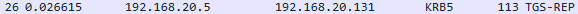
Este paquete contiene el ticket de servicio con el nombre del mismo y el equipo desde el que solicita y unos datos cifrados que son la SessionKey para luego interactuar con el servicio del host.
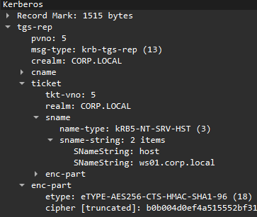
Si nos fijamos el usuario hace otra petición para un nuevo ticket para el servicio de LDAP en el host del controlador del dominio.
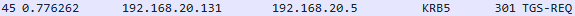
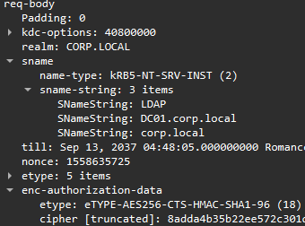
El servicio responde con el nuevo ticket:
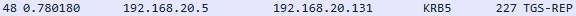
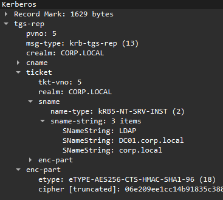
A partir de aqui se observa el tráfico con los servicios que ya se están solicitando del host:
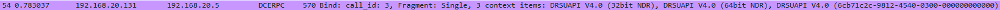
En el primer paquete vemos que
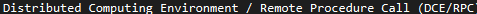
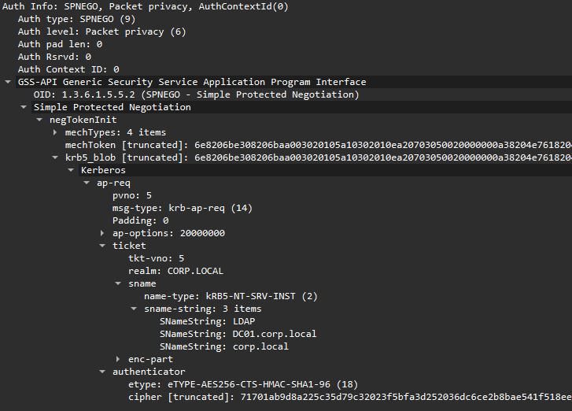
Le envía el ticket de servicio para LDAP y el autenticator.
El servicio envía un paquete de autenticación mutua:
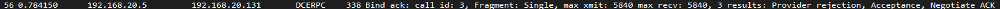
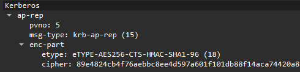
Que si recordamos son datos como un timestamp cifrados con la sessionkey que el usuario ya posee.
Todo esto se lleva a cabo por un usuario en el controlador de dominio. Este está creado por defecto y se llama krbtgt.
El KDC o KeyDistributionCenter engloba a los servicios de authentication y el ticket gratnting service.
Este usuario es el que se encarga de cifrar estos paquetes y tickets porque la clave de este usuario se trata de la clave del TGS.
La clave por defecto de este usuario es muy larga y compleja por lo que obviamente no se debería cambiar nunca a algo muy sencillo de crackear.
Si queremos ver el ServicePrincipalNames SPN, se puede observar qué servicios ofrece cada ordenador de la infraestructura y que SPN tiene asociados:
Get-NetComputer -Identity WS01
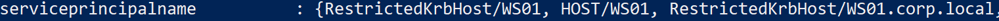
Get-NetComputer -Identity DC01
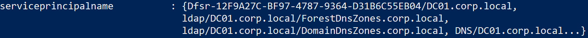